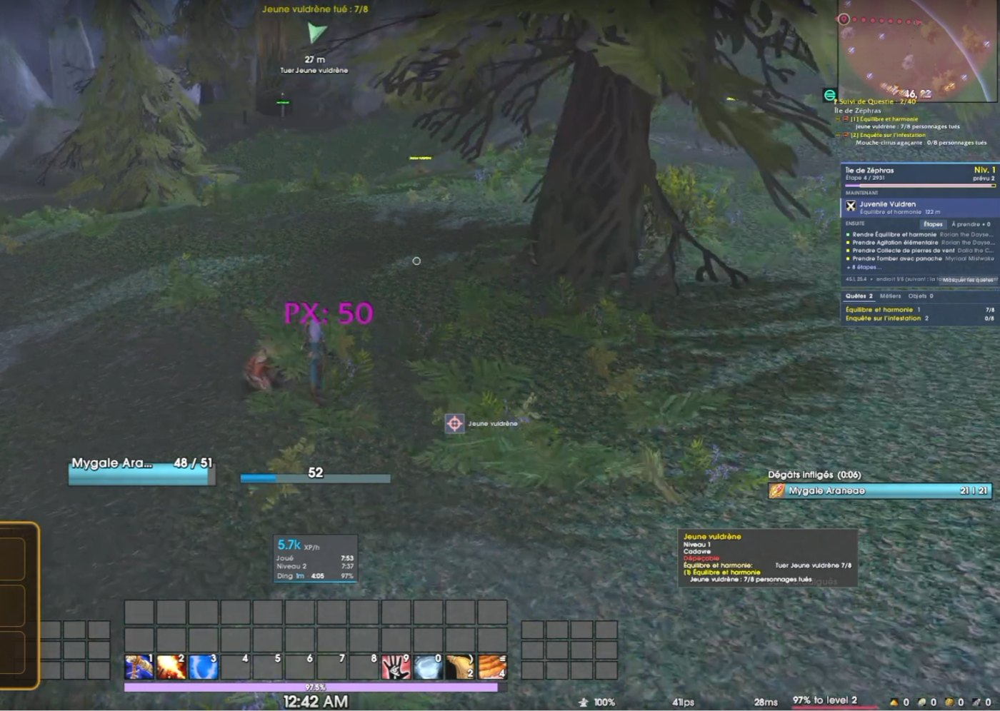

Record de lancement, GeForce NOW et chamans : les infos du week-end
8 novembre 2026
Un record annoncé par Blizzard, le jeu jouable dans le cloud, un pilote graphique dédié et une réponse attendue pour les chamans : le résumé des infos de ce début de week-end.

Le plus gros lancement de l'histoire de WoW
Blizzard annonce que WoW Forever a réalisé le plus gros lancement de l'histoire de World of Warcraft en nombre de joueurs connectés en même temps, et le plus grand nombre de joueurs revenus de la licence. Holly Longdale ajoute que le jeu a attiré plus de nouveaux joueurs que n'importe quel lancement depuis 15 ans. Aucun chiffre n'a été donné.
WoW Forever sur GeForce NOW
- Le jeu se joue maintenant en streaming dans le cloud sur GeForce NOW, avec ton abonnement WoW ou ton temps de jeu.
- Les membres Premium ont accès à une centaine d'addons CurseForge populaires.
- Une offre de lancement est à récupérer dans le portail de compte jusqu'au 12 novembre à 8 h 59 (heure de Paris), dans la limite des stocks.
Un pilote NVIDIA pour Forever
NVIDIA a sorti les pilotes GeForce 621.14, optimisés pour WoW Forever. Si tu as une carte GeForce, ça vaut le coup de les installer avec l'application NVIDIA.
Chamans : une révision, mais pas avant 2027
- Les chamans se plaignent de plusieurs changements : l'Amélioration qui préfère l'équipement de lanceur de sorts, la disparition d'Explosion de lave en Élémentaire, Remous moins efficace en Restauration.
- Pour l'Amélioration, un correctif arrive avec l'équilibrage du 11 novembre : la Force doit redevenir la meilleure statistique.
- Pour le reste, Kris Zierhut ne serait « pas surpris » que les talents du chaman soient revus début 2027, mais « pas avant ». Rien n'est promis pour l'instant.
Sources : JudgeHype (record, 7 novembre), JudgeHype (GeForce NOW), JudgeHype (pilotes NVIDIA), Kami Labs (chamans, 7 novembre).